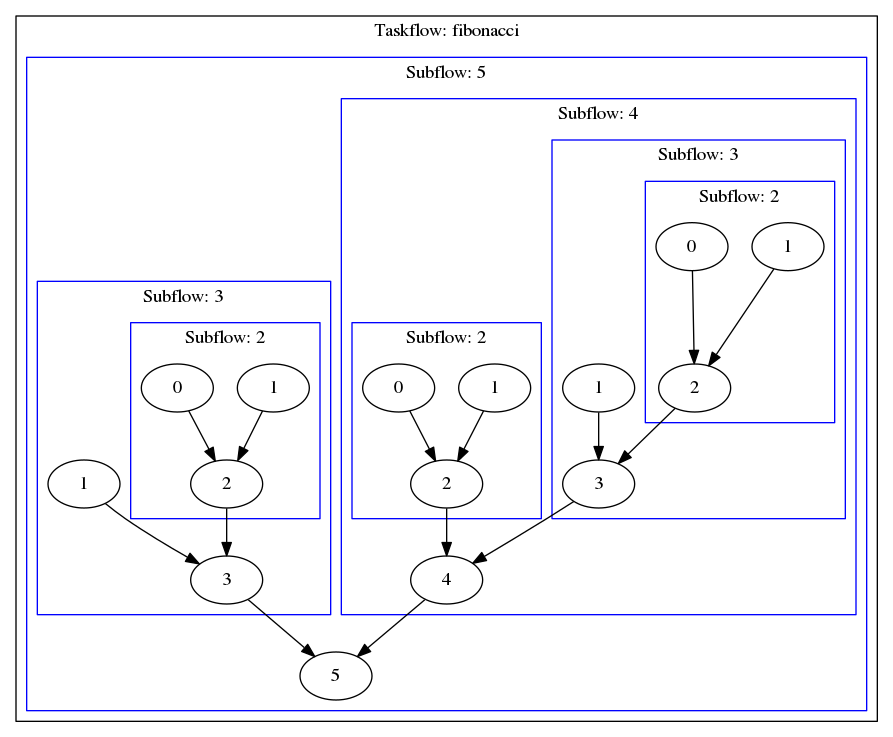

We study the classic problem, Fibonacci Number, to demonstrate the use of recursive task parallelism.
Problem Formulation
In mathematics, the Fibonacci numbers, commonly denoted F(n), form a sequence such that each number is the sum of the two preceding ones, starting from 0 and 1.
0, 1, 1, 2, 3, 5, 8, 13, 21, 34, 55, 89, ...
A common solution for computing fibonacci numbers is recursion.
int fib(int n) {
if(n < 2) return n;
return fib(n-1) + fib(n-2);
}
Recursive Fibonacci Parallelism
We use tf::Subflow to recursively compute fibonacci numbers in parallel.
if (n < 2) return n;
int res1, res2;
return res1 + res2;
}
int main(int argc, char* argv[]) {
int N = 5;
int res;
taskflow.emplace([&res, N] (
tf::Subflow& sbf) { res = spawn(N, sbf); })
executor.
run(taskflow).wait();
return 0;
}
class to create an executor for running a taskflow graph
Definition executor.hpp:50
tf::Future< void > run(Taskflow &taskflow)
runs a taskflow once
Definition executor.hpp:1573
Task emplace(C &&callable)
creates a static task
Definition flow_builder.hpp:742
class to construct a subflow graph from the execution of a dynamic task
Definition flow_builder.hpp:889
void join()
enables the subflow to join its parent task
Definition executor.hpp:1826
class to create a taskflow object
Definition core/taskflow.hpp:73
main taskflow include file
The spawned taskflow graph for computing up to the fifth fibonacci number is shown below:

Even if recursive dynamic tasking or subflows are possible, the recursion depth may not be too deep or it can cause stack overflow.